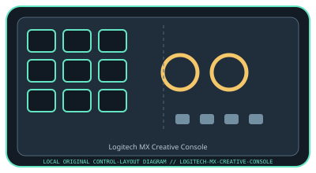

[ SPECIALIZED INPUT CONTROLLERS // IDENTIFIED COMPONENT ]
Logitech MX Creative Console
Two-part desktop creative controller pairing a customizable LCD keypad with a wireless dialpad.

MODEL IDENTIFICATION: MX Creative Console (keypad and dialpad set). Confirm the full label, revision, region, included accessories, and software generation against the physical unit before use.
Model specifications
| Catalog leaf | Specialized input controllers |
|---|---|
| Exact model / identifier | MX Creative Console (keypad and dialpad set) |
| Control inputs / sensors | Wired keypad with nine customizable LCD keys and two page-switch buttons; companion dialpad has a clickable main dial, a secondary smooth roller, and four buttons. The dial/roller provide rotary input and buttons are discrete. The dialpad is wireless; the keypad is the wired host interface. |
| Connection / protocol | Keypad connects by USB-C; dialpad pairs over Bluetooth Low Energy or a compatible optional Logi Bolt USB receiver. Neither unit is an audio interface. Pairing and receiver support are host-dependent. |
| Driver, software, and host compatibility | Logi Options+ configures profiles, actions, and supported application plug-ins. Logitech currently lists Windows and macOS requirements; check Options+ support and Bluetooth compatibility for the host OS. Third-party plug-ins may require separate accounts or network access. |
| Setup / calibration | Install Logi Options+, connect the keypad over USB-C, install the specified two AAA batteries in the dialpad, then pair it by Bluetooth or a compatible Logi Bolt receiver in Options+. Test LCD keys, both dials, and buttons in a supported app; configure dial direction/sensitivity in software. No mechanical sensor calibration is specified. |
Safety and preservation
Use only the specified AAA batteries with the polarity shown in Logitech documentation; keep batteries away from children and recycle/dispose safely. Avoid liquid ingress, forced dial movement, and cable strain. Review configured actions before use, especially commands that modify files or send content.
Record observed condition, host OS, application/driver version, firmware, accessories, and test conditions separately from manufacturer claims.
Primary manufacturer sources
- Logitech MX Creative Console product informationManufacturer product overview and hardware configuration.
- Logitech MX Creative Console quick-start guideManufacturer quick-start guide for product setup, pairing, and controls.
Specifications and software support can change by revision and host OS. Verify the exact unit and applicable manual before service or deployment.